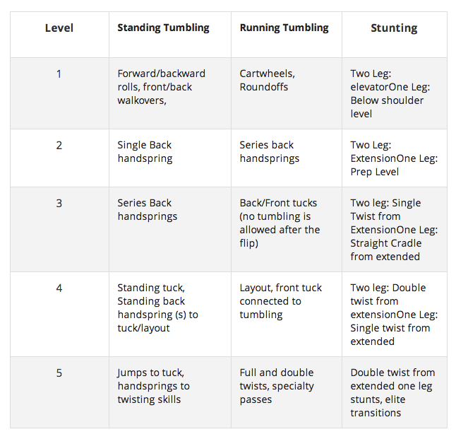

Cheer is a sport involving the performance of organized cheering, chanting, stunting, and dancing in support of a sports team at games and particapte in competitons.
Cheer is widely considered to not be a “real sport” and has never gotten the recognition it deserves even after it was offically made into an Olympic sport. A lot of poeple are mislead into believeing cheer isn't a sport because its a predominantly female sport. However, cheerleaders have to go through rigorous training and practice all the time to perfect the routines displayed at games and competitions. Being a cheerleader myself I’m able to vouch for the cheer community, there’s more to cheer than just yelling your “ABC’s” cheer takes a lot of time and dedication.
Any good athlete doesn’t really recognize an off-season, but cheerleaders truly have official cheer events year-round. We have sideline cheering in the fall and winter, competitions in the winter and spring, and tryouts, camps, and practicing with your new team in the spring and summer. Teams practice intensely for competition and perform a routine no longer than 2 minutes and 30 seconds yearly, making cheer a year-round sport in preparation for these competitions. Cheerleaders also show your gratitude and encourage their teams at any and every given sport.
Even the most common stunts in cheerleading require great balance, a solid build and flexibility, meaning most cheerleaders, much like ballerinas, have enough core strength and coordination. With all of the high flying involved in cheerleading, injuries can happen. Cheerleading carries the highest rate of catastrophic injuries in sports. A report published in 2012 states that cheerleading "accounted for 65% of all direct catastrophic injuries to girl athletes at the high school level and 70.8% at the college level" between 1982 and 2009. Those numbers make cheerleading outpace most other sports high schoolers play, leading some to call it "more dangerous than football."